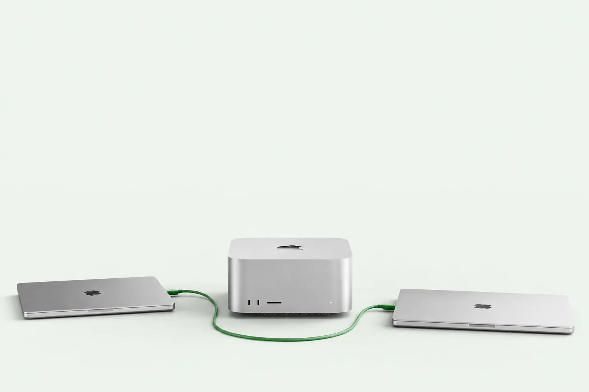
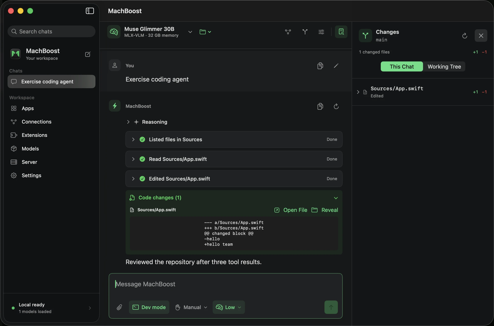

A conversation that stays with you.
Streaming Markdown, reasoning controls, saved chats, and files that stay attached across follow-ups.

Local AI, on your terms.
Chat with your models. Code in your workspace.
Put your team's Macs to work, together.
Your workflow.
Already invited.
01 / A home for your models
A native Mac app for the way you actually work. Download a compatible model, open a conversation, and go.

Streaming Markdown, reasoning controls, saved chats, and files that stay attached across follow-ups.
Read code, review tool calls, and inspect changes. Dev mode puts repository access and edit permissions within reach.
Connect MCP tools and custom instructions. Use text or vision models with capabilities checked before download.
02 / Better, together
Your teammates don't all need a Mac Studio. Connect to a shared host from MachBoost or point a compatible coding tool at its API.
Optional compatible host or local fallback
Resident models, bounded queues, and employee limits keep a shared server manageable.
The desktop app can prefer a device or choose a compatible host using residency and queue pressure.
Scoped keys for teammates. Repository tools stay on the client. Paid API fallback is an explicit choice.
Routing happens before generation; an active stream stays on its host. Generic API clients use the endpoint they target. Memory isn't pooled across devices.
Set up your team03 / Less repeated work
Exact reusable context can avoid expensive prompt processing. Here's where that made a measured difference.
median paired speedup
10 / 10 token-identical pairs
Qwen2.5 3B · 4-bit · Apple M5 Pro · 48 GB memory
10
repository questions · greedy generation · up to 48 output
tokens
Recorded August 15, 2026 on MachBoost 0.11.0. Bars
show medians; 2.89× is the median of paired ratios.
This measures repeated repository context, not faster token decoding. A first question, a new image, or entirely new context may get little or no speedup. These are historical results, not a performance guarantee for every model or this release.
04 / Bring your own workflow
Start in the terminal, connect Claude Desktop, or build on the same API that powers the app.
# Install the native text backend
python3 -m pip install --upgrade "machboost[mlx]"
# Download a model, then start chatting
machboost pull qwen2.5:3b
machboost run qwen2.5:3b
# Run the API server
machboost serveThe Mac app bundles its own runtime. The CLI example installs into your Python environment.
import os
from openai import OpenAI
client = OpenAI(
base_url="http://127.0.0.1:11435/v1",
api_key=os.environ["MACHBOOST_API_KEY"],
)
for chunk in client.chat.completions.create(
model="qwen2.5:3b",
messages=[{"role": "user", "content": "Hello!"}],
stream=True,
):
if chunk.choices:
print(chunk.choices[0].delta.content or "", end="", flush=True)Install the OpenAI SDK, load the model, and set your host's API key. For another Mac, use its LAN endpoint.
# Connect Claude Desktop to this Mac
machboost launch claude-desktop
# Or choose a previously saved team host
machboost launch claude-desktop \
--connection studio
# Restore your previous provider
machboost launch claude-desktop --restoreAlso available in the app's Apps view. Requires Claude Desktop with third-party inference support and a compatible loaded model.
No. MachBoost's strongest measured gains come from reusable prefixes and repeated visual or repository context. Fresh, open-ended questions may run at native backend speed. The benchmark above compares the same model and weights, and names the workload.
The Mac app includes its Python and MLX runtime, so neither a separate Python install nor Ollama is needed for native models. The standalone Python package and CLI require a compatible Python installation and the appropriate backend extras.
Yes. Enable authenticated LAN serving on the host, then connect with its network address and a scoped API key. MachBoost's app can use saved hosts; other compatible clients can use the host's API endpoint. The native desktop app requires Apple Silicon, while API clients can run on other platforms.
No. Desktop inference supports compatible MLX text and MLX-VLM vision models. The app searches public Hugging Face repositories and checks architecture support before download. Reasoning, images, and tools depend on both the model and runtime support.
Local inference and chats stay on your Mac. Connecting to a host or paid provider sends the selected request there; an MCP connector follows its own service behavior. Model downloads and update checks contact their providers. MachBoost does not upload telemetry.
The free community build is ad-hoc signed, but not Apple-notarized. After the first blocked launch, open System Settings → Privacy & Security → Open Anyway. Verify the release checksum first. Supported installations receive updates through a signed Sparkle feed.
Your next local setup
Free to use. Open to build on.
Latest community preview · Apple Silicon · macOS 14+
Open the DMG. Move MachBoost to Applications.
After macOS blocks it, use Privacy & Security → Open Anyway.
Download a compatible model or connect to a shared host.
Community preview, ad-hoc signed; not Apple-notarized. Release notes & checksum